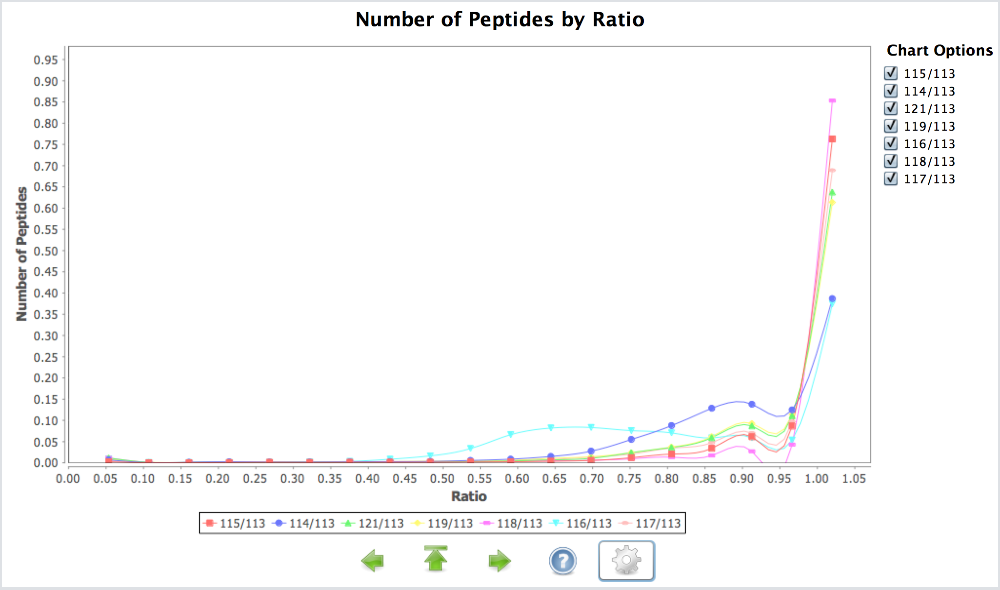

Explanation
The Peptide per Ratio is a chart of the peptide distribution versus the study variables in the quantitation experiment. It shows the different between all the replicates and sample for every peptide. Also shows the relation between different conditions globally. The following example shows the differences between all the samples in ITRAQ experiments.
The inspector chart can be used independently and plugged in Java desktop applications but also in can be use to generate JSON structures with the distributions and values of the nine charts. It has been used in the PRIDE pipeline during the submission process to generate the quality metrics for each file.
